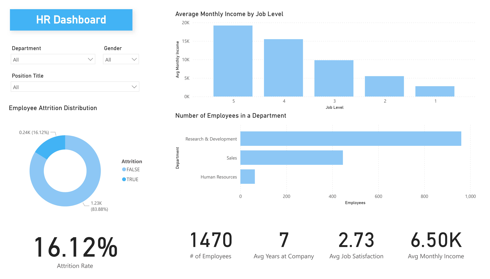
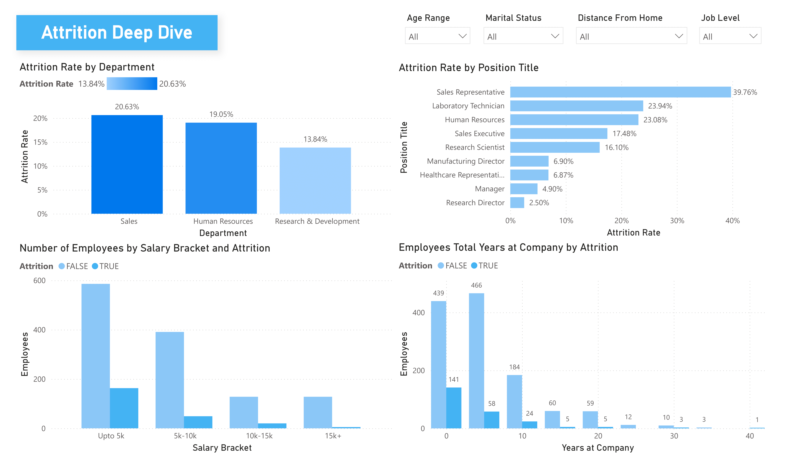
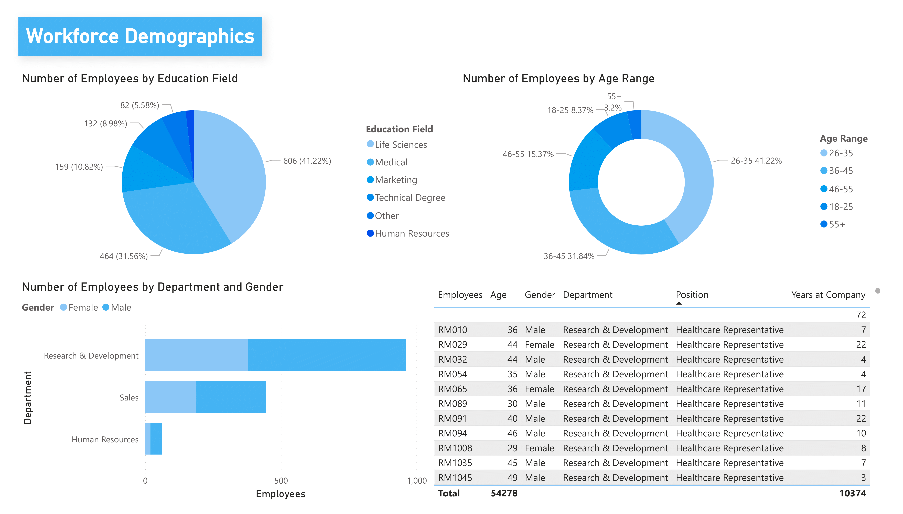
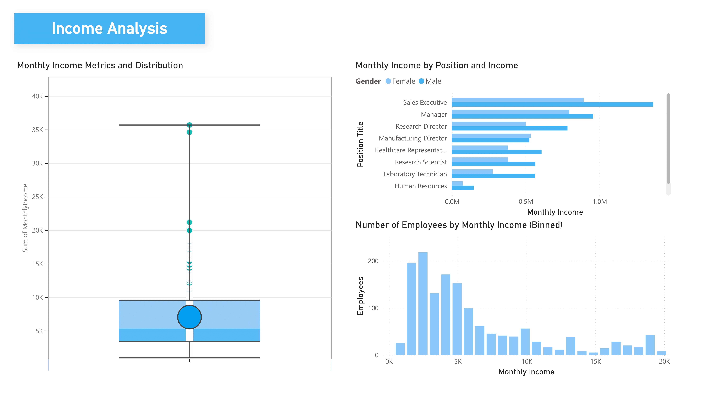

Data Analysis & Reporting
HR Analytics Dashboard
Project Description
This project demonstrates the creation of a data pipeline to connect a SharePoint O-Data feed to Power BI for HR data analysis. The process began by setting up a custom SharePoint site and populating it with an HR Analytics dataset from Kaggle, which contained 38 columns of employee data. An OData endpoint URL was then constructed to allow Power BI to access the data list, named "HR Analytics," from the SharePoint site.
Once the OData feed was connected to Power BI, several data transformation steps were performed to clean the dataset, including:
- Removing duplicate entries based on employee ID.
- Deleting columns that were unnecessary for the analysis.
- Renaming column headers for clarity.
- Correcting the data type for numerical columns from 'text' to 'whole number'.
Results
The final result is a four-page Power BI report designed to analyze the HR data.
The first page is an HR dashboard providing a general overview of employee attrition and departmental breakdowns. This page required a custom DAX measure to accurately calculate the attrition rate.

The second page offers a deeper analysis of employee turnover, examining attrition across different departments, positions, and salary brackets, with interactive filters for drilling down by demographics like age and marital status.

The third page details the company's workforce composition, with charts showing the distribution of employees by education and age, as well as a gender breakdown for each department.

The final page focuses on compensation, presenting the distribution of monthly income across the company with breakdowns by position and gender.
